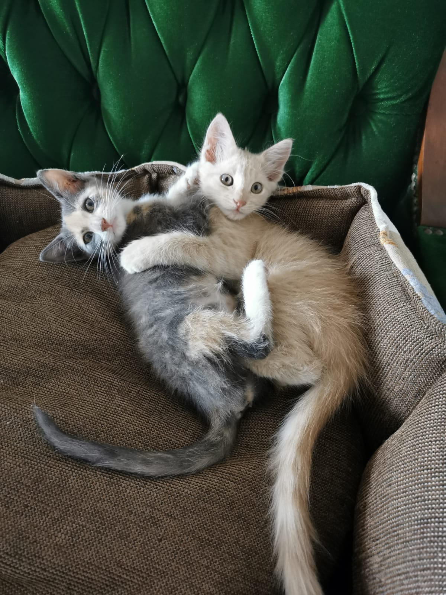
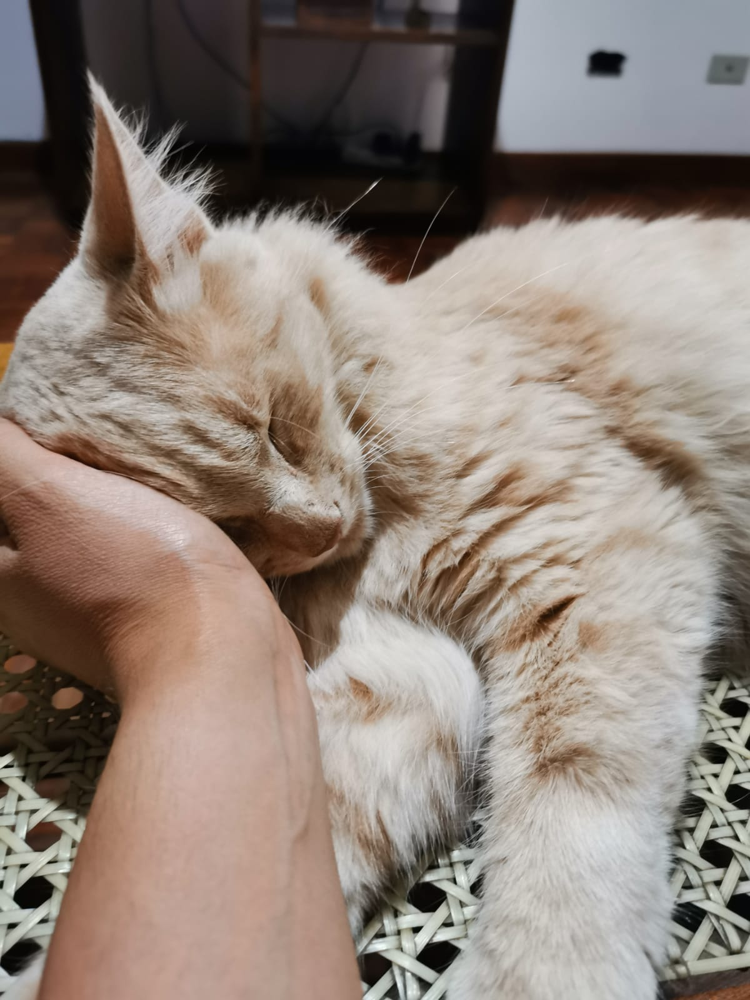
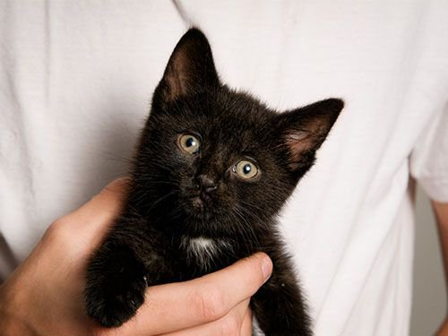
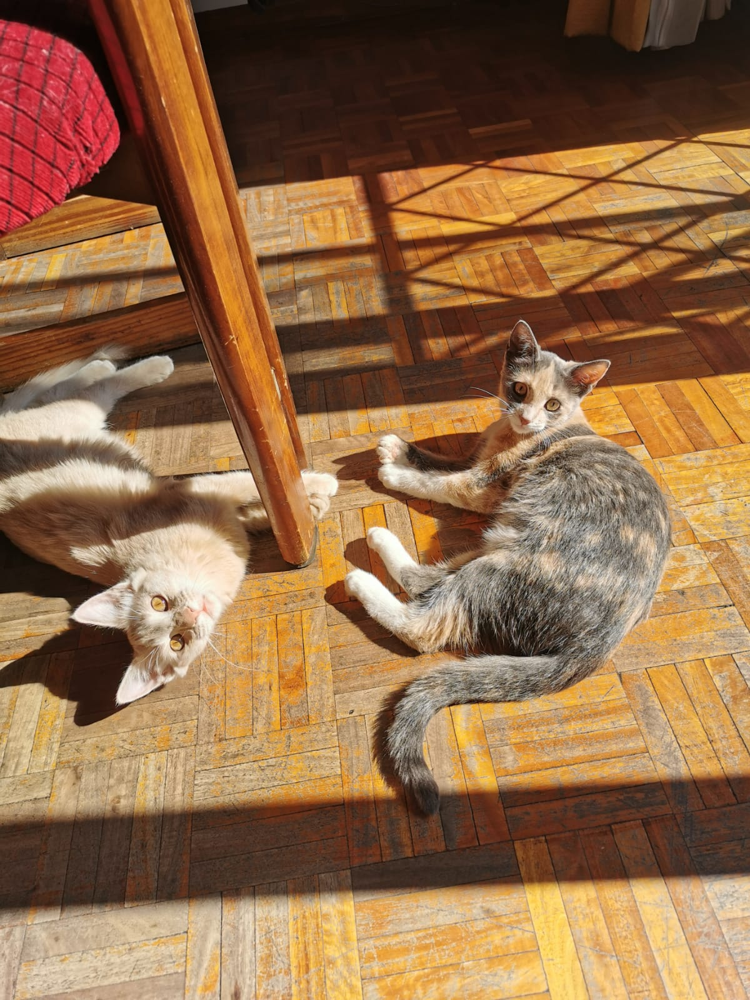

1. Cambiarás el mundo de un gato
Aunque muchas personas aseguren que los gatos son animales independientes, lo cierto es que se trata de seres sociables, capaces de razonar y experimentar un amplio abanico de emociones. Por ese motivo, un gato en un refugio es probable que se sienta abandonado, sin una figura de referencia a la que acudir y que experimente altos niveles de estrés. Adoptar a un felino que se encuentre en este estado, le proporcionará el bienestar emocional que necesita y hará que el tiempo que pase junto a ti se sienta feliz y amado.
2. Los gatos son beneficiosos para la salud
Aunque esta afirmación pueda resultar algo dudosa, lo cierto es que son muchos los estudios que demuestran que tener un gato es beneficioso para la salud de los humanos. Tener un gato mejora nuestro estado de ánimo, aumenta nuestra autoestima, previene alergias en los niños y llega a reducir el riesgo de muerte por infarto hasta en un 30%. Increíble, ¿cierto?
3. Un compañero de juegos excelente para los niños
Adoptar un gato es una experiencia muy enriquecedora para un niño, puesto que le enseña la importancia de la adopción, le inicia en el cuidado de los animales, las responsabilidades, la empatía y la tenencia responsable. No olvidemos que nosotros, como adultos, debemos enseñar a los pequeños a relacionarse de forma positiva con los animales y que nuestras acciones serán un ejemplo para ellos.
4. Razones para adoptar un gato negro
¿Sabías que los gatos negros son los que menos probabilidades tienen de ser adoptados? Eso es debido, en parte, a que los gatos de color negro se asocian a la mala suerte. Esta creencia popular es fruto de la ignorancia, pues los gatos negros no traen mala suerte, es un mito. Por tanto, puestos a adoptar, podemos centrarnos en uno de los grupos de gatos en adopción más vulnerable de todos: los gatos de color negro.
5. Los gatos son geniales
Los gatos son animales poseedores de un carácter único, pues cada individuo es totalmente singular y distinto a los demás. Pueden ser dormilones, activos, juguetones, cariñosos o algo huraños, pero cualquiera de estas personalidades puede resultar perfecta si encaja con nuestra propia identidad, ¿no crees?
Son compañeros inigualables, silenciosos y cariñosos siempre están a nuestro lado, incluso hasta cuando nos damos una ducha, pero no lo hacen por ser entrometidos sino porque aman nuestra compañía.
Son muy ocurrentes, dan gracia con cada gesto realizan por lo que nunca estarás aburrido.
Los gatos son tan geniales que, incluso, puedes enamorarte de una pareja de hermanos, como son Mindi y Gordo, o de gatos que hayan convivido juntos anteriormente y que hayan sido abandonados. Si hay algo mejor que adoptar a un gato sin duda es adoptar a dos gatos amigos, así el proceso de adaptación será muchísimo más positivo.
